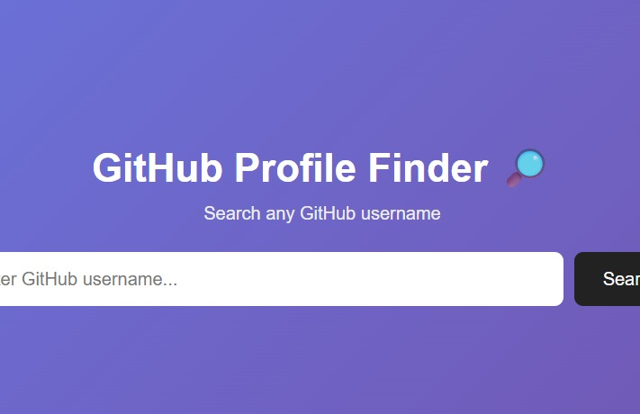
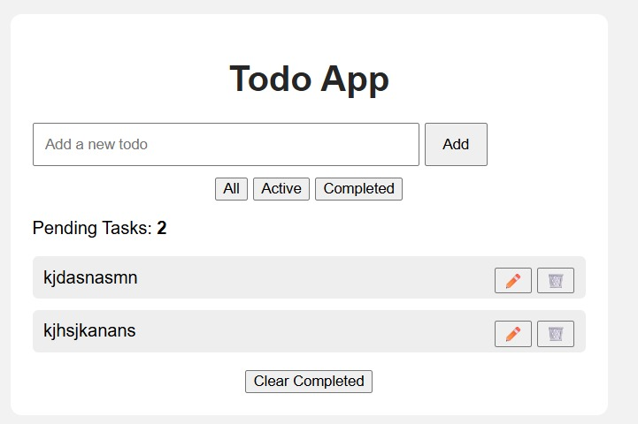
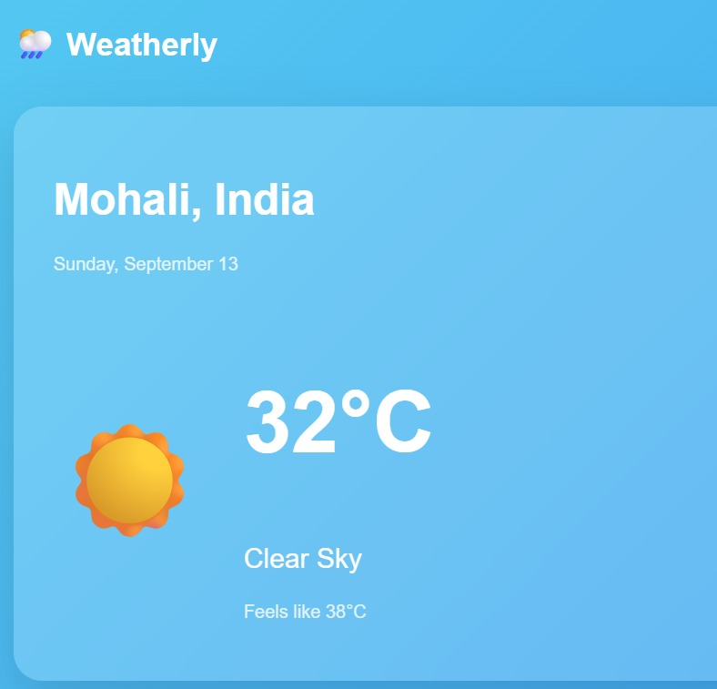
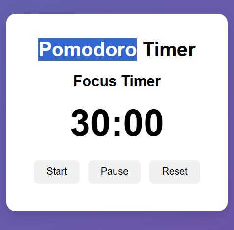
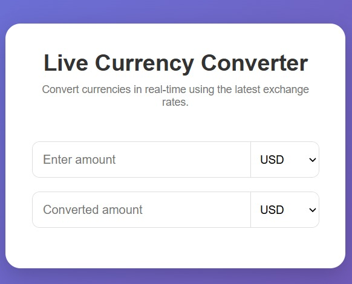

Project 1: Github profile finder

This project allows users to search for Github profiles and view their repositories and other details.
View ProjectWelcome to my portfolio! I enjoy creating user-friendly websites and learning new web technologies.
Hello! My name is Salvoni. I am from Mukerian. I have completed my BCA. Currently, I am learning MERN Stack.
Here are some of the projects I have worked on:

This project allows users to search for Github profiles and view their repositories and other details.
View Project
This project is a simple todo list application that allows users to add, edit, and delete tasks.
View Project
This project provides weather information for a given location using a weather API.
View Project
This project is a productivity app based on the Pomodoro Technique, helping users manage their time effectively.
View Project
This project converts currency values between different countries using real-time exchange rates.
View ProjectThis project allows users to create custom memes by adding text to popular meme templates.
View ProjectHere are some of the skills I have acquired:
If you would like to get in touch, please feel free to reach out via email or connect with me on LinkedIn.
Swami Premanand Mahavidyalaya, Mukerian
Completed
Currently learning at Vali DevEx Hub
Learning HTML, CSS, JavaScript, React, Node.js, Express.js and MongoDB.